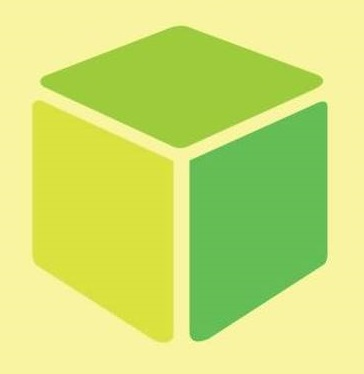

O Codifikids é um projeto do ICMC que busca ensinar conceitos básicos de programação por meio de brincadeiras e dinâmicas para alunos do ensino fundamental de escolas públicas da periferia.

Como funciona?
São em média 6 aulas quinzenais no semestre;
Turmas de (em torno de 30) alunos do 5º/6º ano;
Aulas ministradas são intercaladas entre monitores;